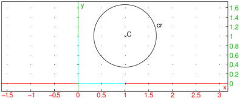
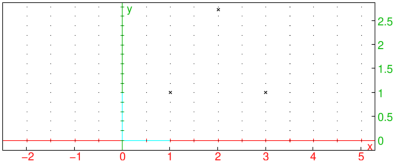

24.11.2 Hyperbola in the plane
For hyperbolas in space, see Section 25.9.3.
The hyperbola
command draws hyperbolas and other conic sections.
hyperbola can take parameters in two different ways.
-
hyperbola can take one argument:
eqn, a second degree equation in the
variables x and y (or an expression which will be set to zero).
- hyperbola(eqn) returns and draws
the conic section given by the equation eqn.
- Alternatively, hyperbola can take three arguments:
-
A,B, two points.
- C, a point or a real number.
- hyperbola(A,B,C) returns and draws the hyperbola
with foci A and B and passing through C (if C is a point) or
whose semi-major axis has length C (if C is a real number).
- Note that if the third argument is a point on the real axis, the
real affix of the point won’t work, it needs to be specified with
the point command.
Examples

